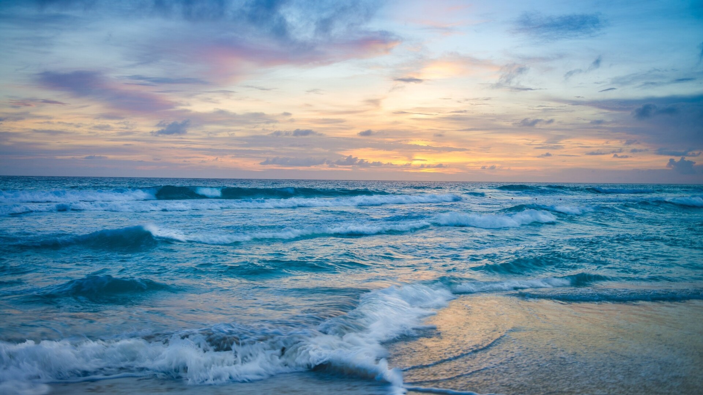

Meu nome é Jon e sou fotógrafo de por do sol e praias. Cresci em uma cidade costeira do Brasil, cercado pela
natureza e pelo mar. Desde criança, sempre me fascinou a beleza dos fins de tarde à beira-mar e, quando
comecei a fotografar, descobri que podia capturar essa beleza em imagens duradouras.
Eu nunca tive a intenção de me tornar um fotógrafo profissional, mas quando as pessoas começaram a elogiar
minhas fotos de pôr do sol e praias, percebi que havia um mercado para o meu trabalho. Comecei a postar
minhas fotos nas redes sociais e logo recebi pedidos de amigos e conhecidos para tirar fotos para eles.
Um por do sol visto através de uma praia deserta, com o sol parecendo um enorme disco amarelo se fundindo
com o mar.
Uma imagem de um por do sol vibrante e colorido, com tons de laranja pintando o céu enquanto o sol se põe no
horizonte. A silhueta de palmeiras e coqueiros se destaca contra o céu brilhante.

Uma cena de um pôr do sol tranquilo e sereno, com o sol parecendo um disco laranja brilhante afundando no
horizonte. O céu é um gradiente suave de rosa e azul pálido, enquanto a água calma reflete a beleza do céu.